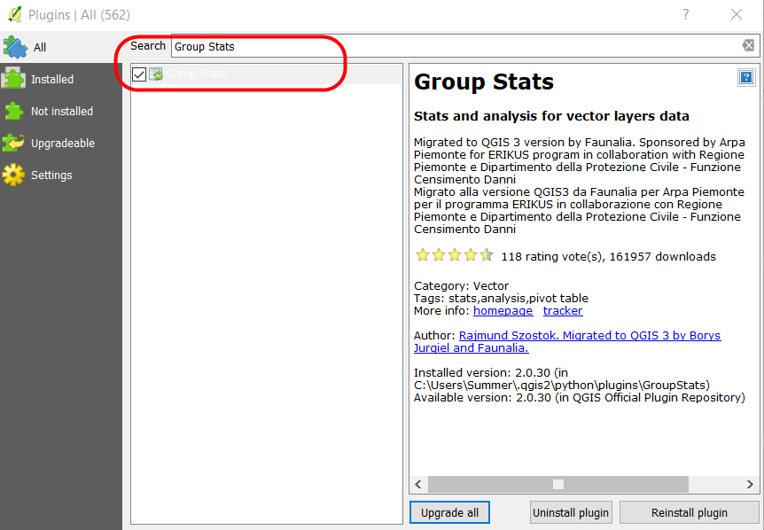
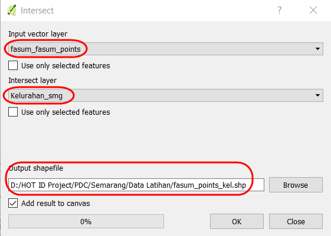
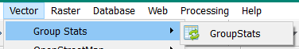
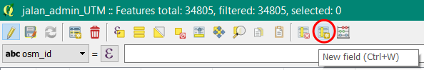

Group Stats Plugin for Calculate The Objects
Download page as PDFObjectives:
- To be able to demonstrate how to install a plugin for calculate number of object in QGIS
- To be able to operate the Group Stats plugin for calculate number of OSM Object
The calculation of the quantity of data can be an indicator of the achievement of mapping projects that can be poured into a mapping report. The process of calculating the quantity of OSM data can be done by installing the plugin group stats in QGIS for free, this plugin can use to count the number of objects based on categories.
I. Group Stats Installation
If you haven’t the QGIS application, you can download it in this link and install the QGIS.
http://download.osgeo.org/qgis/win64/QGIS-OSGeo4W-2.14.22-1-Setup-x86.exe for Windows 32 bit and http://download.osgeo.org/qgis/win64/QGIS-OSGeo4W-2.14.22-1-Setup-x86_64.exe for Windows 64 bit.
Open QGIS and ensure the internet connection is working. Click on Plugins Menu → Manage and Install Plugins

Plugins Menu Interface
- Type Group Stats in the Search box and click on Install Plugin

Install the plugin
- If the installation has finished, the plugin will show up in Vector Menu → GroupStats

GroupStats Interface
II. Calculate OSM Objects using Group Stats
We can overlay the administrative boundaries and the infrastructures to get the calculate of data quantity. The results of the calculation can be used to create a monthly report and monitory the mapping timeline. Before we starting to calculate the objects, we have to prepare the data in the shapefile format.
We can use the data form PDC InaWARE project in Semarang City in this chapter, getting the administrative boundary data in this link https://openstreetmap.id/data-semarang/ and the infrastructures data in https://export.hotosm.org/en/v3/exports (follow this chapter 04.Using YAML to the instructions). The list of the objects in the shapefile:
Public Facilities: Points and Polygons
- All objects in amenity=*
- Electrical Facility (power=*)
- Park (leisure=*)
- Government Office (office=*)
- Supermarket (shop=supermarket)
highways: Lines
highway=*
The next step we will start to calculate the objects:
a. Preparing the Data
- Open the layer in QGIS with click on Add Vector Layer → Browse or click Layer Menu → Add Layer → Add Vector Layer → Browse.

Add Vector Layer
- Choose your directory that the objects file is saved → Select All → Open → Open
Open shapefile from directory
- The layers will appear on map canvas and Layers Panel
The Objects layer view on the map canvas
- Add the administrative boundary to QGIS with click on the Add Vector Layer

The layer view on the map canvas
b. Merge the Objects Layer and Administrative Boundary
- Merge the layer between the objects and administrative boundary so that the objects have a new column from the administrative boundary. Click Menu Vector → Geoprocessing Tool → Intersect to merge the layer. In section, input vector layer selects the object layer with the Intersect layer (administrative boundary layer). Choose Browse to save the file output shapefile in your directory, and click OK.

Intersect layer
- The results will appear in your map canvas as a new layer. We can get the details of the attribute data form “fasum_point_admin” layer with right-click on the layer and click on Open Attribute Table. We found at the column name_2 the name of a village in each object.

The attribute table of intersecting result
- We will repeat the process on the highways layer and the polygon public facilities layer. The intersecting results will be three-layer on the QGIS.
- Open the attribute table in each layer and check the column that it is a reference to calculate the OSM data. The list of the column in attribute table:
- Point public facilities = amenity, power, office dan supermarket
- Polygon public facilities = amenity, power, office, supermarket, dan leisure
- highways = highway
c. Calculate the Objects using Group Stats Plugin
The mapping results are points, lines, and polygons so that we can calculate with a different formula in Group Stats plugin based on the type of data. OSM data in points and polygons will be calculated with the formula “count” that calculating the number of an attribute in the column. Although, OSM data in lines will be calculated with the formula “sum”, that calculating the number of length segments.
- The Calculating Points and Polygons
- Open the plugin with Menu Vector → Group Stats → GroupStats

Group Stats
- Follow the instructions as below:
- Layers (1)= show the layer will be calculated. Fields = an automatic show the column in attribute table that chooses
- Filter (2) = use to show objects only in specific administrative boundary
- Columns (3) = use to become column on the table, fill the column on the Fields, with a click and move the Columns box.
- Rows (4) = use to become a row in the table, fill the column on the Fields, with a click and move the Row box.
- Value (5)= use to select the formula
- Click on Calculate (6) to starting the calculation
Step by step the Group Stats
- We will use the filter function to select the objects only in specific sub-district. Click on “fasum_point_admin”, so that the data only show for once sub-districts. Filter data on the “fasum_point_admin” layer, and click the Filter in Group Stats. The filter window will appear.
Filter data
- We will move the result table in group stats to other spreadsheet applications such as Ms.Excel or Google Sheets. So we can change the visual data to become a graph and a diagram. To start the process click on Data → Copy all to clipboard.
Copy and paste the attribute table
- Open the Microsoft Excel or Google Sheets to move the results table Group Stats.
- We can do the same instructions to calculate the other objects, see the example results from PDC Semarang City in this link http://tinyurl.com/kuantitas-data.
2. Calculate the Lines Object with Calculation Length Segments.
The Calculation a type of lines different with points and polygon. If we calculate the length segments of highways, the shapefile will be changed in Universal Transverse Mercator (UTM) coordinate system. The steps to calculate the length of the highways:
a. Change the Coordinate System
- Right-click on highways layer → Save as → choose the Format ESRI Shapefile → Save as in your directory → CRS choose the reference system on your UTM area.
Save as with different CRS
- If you give the checkmark on the Add saved the file to map, the result will show up in the map canvas and Layers Panel.
b. Create the New Column to Calculation Length of the highways
- Then right-click on the Layers “Jalan_Admin_UTM” → Open Attribute Table. Click on the Toggle editing mode to activate the attribute toolbar.
Toolbar Toggle editing mode
- To add a new column, click on the New Field in the toolbar.

Toolbar New Field
- There are the filled form Add field window
- Name = Title of the column (a maximum of 10 characters)
- Type = Type of data that you need in the fill of the table. Select the Decimal number (real) to view the length of the segments
- Provider type double = The length shows the maximum number of columns and precision shows the number of the decimal in behind comma.
- Click OK
Add field setting
c. Calculation the Length (meter) with Field Calculator
- To start the process click on Open field calculator
- The settings in the Open field calculator:
- We can put the checkmark in Update existing field to update the existing column.
- Choose the column that will be updated
- We can type the “length” to calculate the length of the highway with the formula.
- Double-click on Geometry → $ length is a formula to calculate the length of segments. After we clicked the formula, $length will appear in the Expression box in the right panel.
- Click OK
The setting of Field Calculator
- The results will be displayed in the last column.

The length of highways
- Save your edit with Save Edits in the toolbar. To finish the process click Toggle Editing.

Save edits
d. Calculation the length of highways based on the type of highways with Group Stats
- Open Group Stats click on the Menu Vector → Group Stats → Group Stats.
- We can use the “sum” and Length formula to calculate the number of length on the Value box
The setting of length segments
- If we want to calculate based on the administrative boundary, we can use the filter function in the Group Stats plugin. Click on Filter and follow the instructions.
Filter based on subdistricts
- As explained before, we can move the table to another spreadsheet to create a graph. Click on the Data → Copy all to clipboard.
Copy all the clipboard
- Open the spreadsheet and paste the table in there.
The example table of length the highways
| Type of highway | Candi | Jatingaleh | Jomblang | Kaliwiru | Karang Gunung | Tegalsari | Wonotinggal |
|---|---|---|---|---|---|---|---|
| Motorway | - | 1313.88 | 163.85 | - | - | - | - |
| Trunk | - | 1571.20 | - | 1602.19 | - | - | - |
| Primary | - | 1389.34 | 1264.54 | - | 206.96 | - | - |
| Secondary | 1065.13 | - | 24.17 | 2353.86 | - | - | - |
| Tertiary | 271.49 | 3920.71 | 1612.78 | - | 836.18 | - | - |
| Service | 500.24 | 2567.00 | 226.11 | 116.68 | 150.03 | 301.93 | 851.94 |
| Residential | 8486.45 | 14300.66 | 20972.41 | 5424.36 | 13322.03 | 15234.38 | 11635.03 |
| Pedestrian | - | 1313.88 | 163.85 | - | - | 141.93 | 344.38 |
| Path | - | 14.68 | - | - | - | 601.85 | 26.40 |
| Living Street | 5913.74 | 2841.22 | 6588.17 | 451.66 | 4401.59 | 3509.38 | 2576.71 |
- We can do the same instructions to calculate the other objects in lines, see the example results from PDC Semarang City in this link http://tinyurl.com/kuantitas-data.
SUMMARY
We have learned about how to calculate the quantities of OSM data using the Group Stats plugin. We can use the statistic data in the report to analysis, mapping progress, and mapping achievement. If you want to create the timeline from the results based on an admin level, we can calculate the data in each village that the village survey has finished.